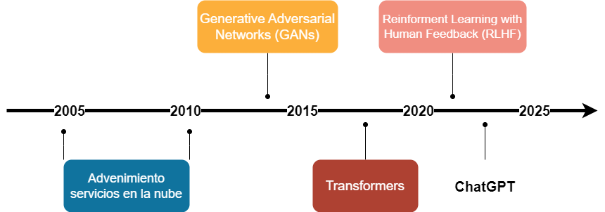
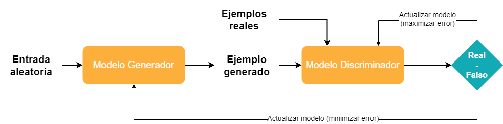
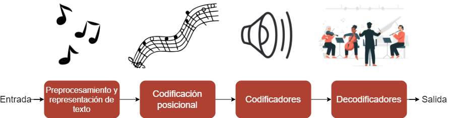
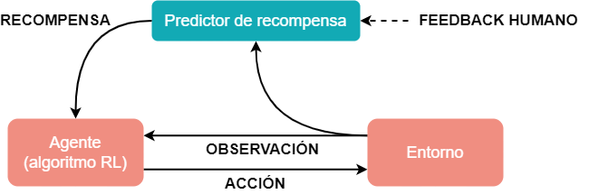
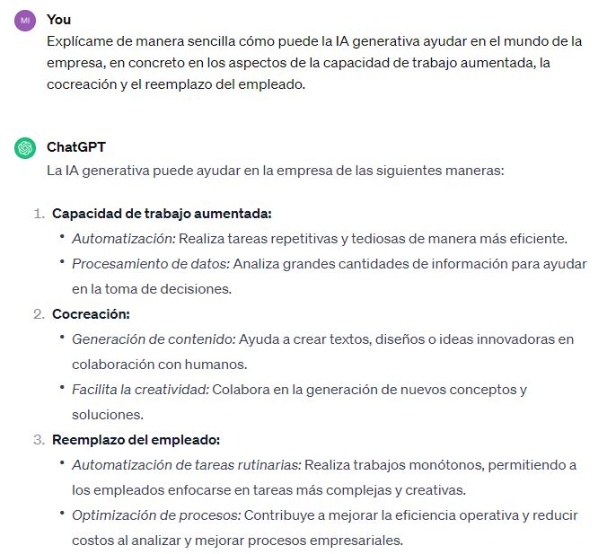

¿Qué es la Inteligencia Artificial Generativa?#
2024-01-24
A pesar de los avances, la Inteligencia Artificial sigue teniendo límites. Aún no disponemos de sistemas que igualen o sobrepasen a la inteligencia humana tal y como la entendemos en aspectos como la flexibilidad y la creatividad (no digamos ya en áreas como la ética o la consciencia). Esta hipotética Superinteligencia Artificial es la llamada Inteligencia Artificial General o también IA fuerte, y es el objetivo último al que se dirigen los desarrollos en esta tecnología.
De momento, los sistemas de IA basados en algoritmos de Machine Learning o aprendizaje automatizado han constituido lo que se ha venido a llamar IA débil o IA estrecha (narrow AI). Los mismos se han centrado en solucionar los problemas específicos para los cuales han sido diseñados. Por ejemplo en aplicaciones como asistentes de voz, reconocimiento de imagénes o recomendaciones personalizadas de producto.
Y sin embargo, en el ámbito del Machine Learning más avanzado, el de la redes neuronales y del Deep Learning, durante los últimos años se han producido innovaciones que han permitido dar pasos de gigante hacia ese propósito de emular la inteligencia humana. En concreto, se ha progresado de una manera notable en un aspecto de la Inteligencia Artificial en el que hasta entonces las máquinas no eran muy buenas: la creación de algo nuevo.
La IA Generativa#
La Inteligencia Artificial Generativa es una rama de la IA que permite a las máquinas crear algo completamente nuevo. Como todo sistema basado en datos, la herramienta se fundamenta en un modelo que ha de ser entrenado con gran cantidad de ejemplos. Después se puede interaccionar con ella introduciendo un texto o instrucción (prompt) para que a partir del mismo genere una respuesta, la cual estará condicionada por los datos con los que llevó a cabo su aprendizaje.
El año 2023 marcó un hito en la Inteligencia Artificial Generativa con la aparición del bot conversacional ChatGPT y la difusión de otras herramientas para la generación automática de texto y de imágenes. Fue el resultado espectacular de una serie de innovaciones que se sucedieron durante los años anteriores y que se asentaron sobre la base de la irrupción de la computación en la nube. Liderado por Amazon, Google y Microsoft, los servicios en la nube ayudaron a generar una cantidad ingente de datos. Además, permitió disponer de una enorme capacidad de procesamiento. Esta combinación de abundancia de datos y potencia de computación sentó las bases de la innovación que vendría a continuación.

GANs: empieza la creación con calidad#
El primer gran paso hacia las máquinas creativas se dio con la invención de las GAN (Generative Adversarial Networks), traducidas como «redes generativas antagónicas». La idea la tuvo en 2014 un estudiante de la Universidad de Montreal. Las redes neuronales ya habían avanzado mucho en el reconocimiento de imágenes y, basándose en ello, a Ian Goodfellow se le ocurrió enfrentar dos redes neuronales para que compitieran entre sí en un juego.
Una de las redes neuronales, la generativa, produciría muestras de aquello que se quiere crear en forma de imágenes, textos o sonidos. La primera muestra sería fallida, mero ruido. Pero entonces la segunda red neuronal, la discriminadora, la cual estaría bien entrenada para la identificación, determinaría hasta qué punto lo generado pertenecería o se acercaría al conjunto de datos del que esta aprendió. Le informaría de un índice de desviación respecto a lo esperado y ello forzaría a la red generativa a realizar un nuevo intento. La red generativa mejoraría progresivamente sus creaciones tratando de engañar a la discriminadora, la cual a su vez perfeccionaría su capacidad de distinguir entre lo real y lo artificial.

De esta manera de generar un tanto arbitraria pero dirigida, después de miles, millones de intentos, la red discriminadora puede dar por bueno el resultado ofrecido por su rival (la clave está en el número elevadísimo de iteraciones. El proceso tiene algo de semejanza con la teoría de la evolución de las especies de Darwin: mutaciones genéticas fortuitas de las cuales solo sobreviven las que sirven a una mejor adaptación al medio, que después de miles, millones de años dan lugar a los diseños de la creación natural).
En pocos años, las GAN mostraron unos resultados espectaculares. Se empezaron a publicar fotografías de personas que parecían reales pero que en la realidad no existían. El sector del diseño de nuevos productos empezó a aprovechar estas herramientas para crear prototipos vituales de una manera en la que se ahorraban tiempo y recursos.
Tranformers: contexto y coherencia del lenguaje#
En 2017 se dio otro gran paso hacia la Inteligencia Artificial Generativa con la publicación de un estudio por parte de investigadores de Google titulado «Atention Is All You Need» («La atención es todo lo que necesitas»). En él se presentaba una nueva idea que revolucionó el modelado del lenguaje mediante la arquitectura a la que llamaron Transformer. Se ponía la atención en las relaciones que establecen las palabras en una frase, para de esta manera lograr una compresión y generación más precisa y coherente del texto.

En la primera parte, el Transformer desmenuza las frases como un compositor que separara la música en notas individuales. A continuación la codificación posicional guarda la información de la posición de las palabras para ayudar a establecer relaciones, de manera análoga al músico que entiende la relación entre notas dispersas que dan lugar a una pieza coherente de música.
El tercer componente, los codificadores, incluye el mecanismo de atención en las redes neuronales. Se dirige la atención hacia palabras específicas y sus relaciones con el resto. En la música, sería similar al ajuste que hace cada músico en partes específicas de la pieza. Los decodificadores finalmente generan el resultado final combinando las aportaciones individuales en una orquesta para generar una actuación coherente y significativa.
Además de la atención a las dependencias y la capacidad de capturar el contexto, el procesamiento simultáneo de múltiples partes del texto aceleró el proceso de comprensión, lo cual les permitió generar respuestas coherentes. Considerando el texto como un todo, los Transformers pueden crear respuestas que suenan naturales y son informativas. Los modelos grandes del lenguaje (LLV: Large Languages Models) como el ChatGPT (GPT: Generative Pre-trained Transformer) están basados en esta arquitectura.
RLHF: aprendizaje del aspecto subjetivo#
Una vez tenemos un texto o una imagen coherente, lo que hace que sea una creación «buena» es un aspecto difícil de definir puesto que en muchos casos es subjetivo. Si se trata de crear ficción quizá debería primar la creatividad, mientras que las piezas informativas deberían ser veraces y un artículo de opinión podría ser irónico. Para recoger estos atributos y optimizar los resultados surgió otro de los avances importantes, el algoritmo llamado Reinforcement Learning with Human Feedback (RLHF), el «aprendizaje por refuerzo mediante retroalimentación humana».
Esta técnica permitió mejorar los modelos combinando el aprendizaje por refuerzo (una técnica en la cual el modelo aprende a tomar decisiones interactuando con un entorno y recibiendo retroalimentación en forma de recompensas o penalizaciones) con el feedback aportado por la sabiduría humana. Esta información se incorpora a un proceso de reentrenamiento que ayuda al modelo a encontrar con más precisión lo que busca el usuario.

La era de las máquinas creativas#
En vista de estos avances tecnológicos, se puede decir que ya hemos llegado a la era de las máquinas creativas. El bot conversacional ChatGPT-4 mejora sustancialmente a su precedesor en sus capacidades, y empresas como Midjourney y Stable Diffusion han utilizado las técnicas generativas para permitir a los usuarios crear obras de arte a partir de unas simples instrucciones de texto.
En cuanto al mundo de la empresa, la cuestión ahora es aplicar estas herramientas en los procesos de trabajo, por ejemplo en áreas como el servicio al cliente, marketing personalizado y desarrollo de nuevos productos. Para ahorrarme el trabajo, solicité a ChatGPT que me ayudara a explicarlo.

La respuesta constituye en sí misma un ejemplo de los tipos de aportación que puede ofrecer la IA Generativa. Por una parte, es una cocreación, puesto que yo hice mi parte del trabajo al investigar por mi cuenta los tres aspectos básicos en los que ChatGPT debía centrar su réplica. Por otra parte, la composición del texto por parte de la máquina me libró de un trabajo de redacción que me habría llevado cierto tiempo, aumentando así mi productividad. Y finalmente, se me ocurre que quizá hasta no hubiera hecho falta que escribiera este artículo, probablemente ChatGPT lo hubiera hecho por mí de manera aceptable, reemplazándome y librándome así para otras tareas en las que quizá la IA (aún) no es tan buena como yo.
(Imagen de portada de Tumisu en Pixabay.)